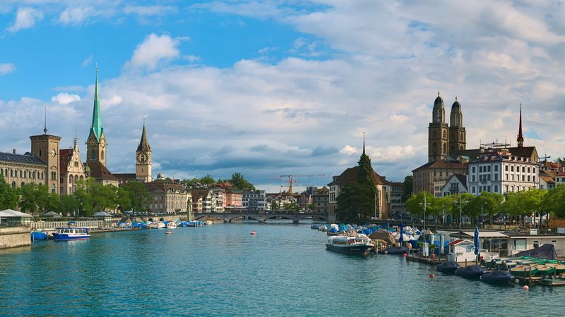
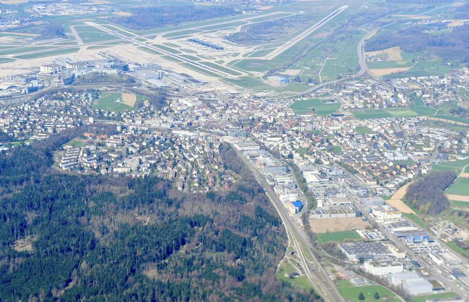

Websites. WebApps. KI.
Für Schweizer KMU.
Individuell entwickelt. Persönlich betreut. Klar offeriert.
Von der professionellen Firmenwebsite bis zur individuellen WebApp und KI-Lösung – direkt mit uns entwickelt.
Klare Offerte vor Projektstart Direkt mit den Gründern Website und Code gehören dir
Die Technik folgt der Aufgabe.
Erst klären wir, was dein Betrieb braucht. Dann, womit.
Nicht nur anschauen. Gleich ausprobieren.
Diese Beispielprojekte zeigen unsere gestalterische und technische Bandbreite. Es sind bewusst als Demos gekennzeichnete Konzepte – keine erfundenen Kundenreferenzen.
Routinefragen beantwortet. Gute Anfragen sortiert.
- Antwortet sofort, auch nachts, am Wochenende und in den Ferien.
- Nimmt Buchungen & Anfragen an, direkt im Chat und ohne Formular-Hürde.
- Qualifiziert Anfragen und leitet ernsthafte Interessenten an dich weiter.
Der Assistent ist optional, monatlich kündbar und lässt sich auch in eine bestehende Website einbauen.
KI-Leistung ansehen →Kleines Team. Klare Verantwortung.
Du arbeitest direkt mit den beiden Personen, die beraten, gestalten und entwickeln.
Hier gebaut. Hier erreichbar.
Unsere Büros stehen in Kloten und Wetzikon, unsere Kunden sitzen im Kanton Zürich und in der übrigen Schweiz. Termine finden vor Ort oder digital statt – die Ansprechperson bleibt in beiden Fällen dieselbe.




Welche digitale Lösung braucht dein Betrieb?
Erzähl uns kurz von deinem Ziel. Wir ordnen ein, welche Lösung sinnvoll ist, und halten Umfang und Preis in einer klaren Offerte fest.